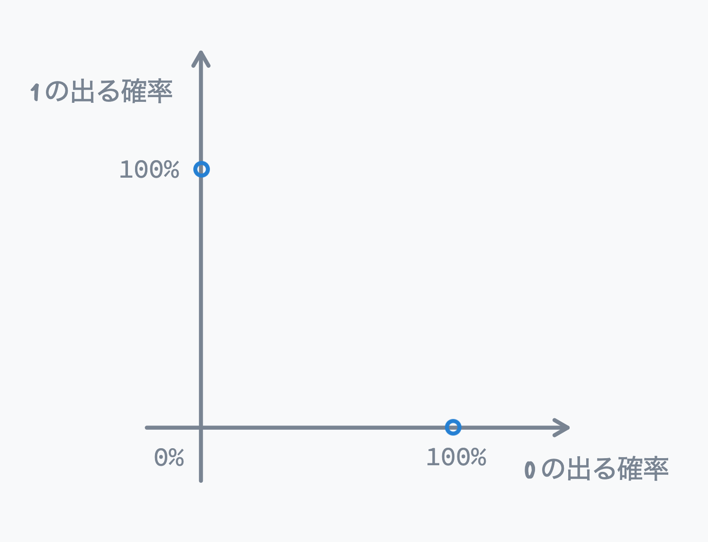

量子コンピュータの計算結果を取り出すには、測定という確率に基づいた奇妙なルールがあるのでした。 ここでさっそく迷子にならないためにも、まずは簡単な確率の世界に慣れておく必要があります。
この節では、ふつうのコンピュータが持つビットに加え、確率と確率的ビットを学びます。確率的ビットの状態はどんなものか、測定によって確率的ビットからどのように情報を取り出すことができるか、などです。
ご存知のように、従来のビットは 0 または 1 のどちらかの値をとります。量子力学と古典力学の対応から、量子コンピュータのビットを量子ビットと呼ぶときは、従来のビットを古典ビットと呼ぶことに注意してください。
確率とは「元旦に雪が降る」とか「日本列島に台風が上陸する」といったイベントが起こる可能性を数値化したものです。確実に発生するイベントなら 100%、絶対に発生しないイベントなら 0% の確率を持ちます。
例として、コイントスを考えてみましょう。コインを投げて、それを見ずに手で覆うと、「コインが表」または「コインが裏」のイベントが起こります。偏りのないコインならば、それぞれのイベントの確率は 50% ずつです。また、表の出やすいコイン (表 60%、裏 40%) や絶対に裏しか出ないコイン (表: 0%、裏: 100%) など、無限のバリエーションが存在します。
足すと 100% になることを考えると、表または裏になる確率を次のグラフのように図式化できます。横軸は表の出る確率 (0〜100%)、縦軸を裏の出る確率 (0〜100%) で、グラフは青色の線分になります。
量子ビットは、コイントスと同じ確率的な性質を持っています。計算中の量子ビットは、コインが宙に浮いていてまだ表か裏か定まっていない状態に対応します。このとき 0 が 60%、1 が 40% などという状態にあり、量子コンピュータはその状態を使って計算します。
計算後の量子ビットは、手の中のコイン (表か裏かが定まった状態) に対応します。測定した時点で 0 か 1 かが確定するので、古典ビットと見分けはつきません。
計算中の量子ビットの確率的状態 (コインが宙を舞っている状態) を重ね合わせ状態と言います。「量子コンピュータは重ね合わせや量子もつれを使った強力なコンピュータである」と言いますが、なぜ重ね合わせが強力なのでしょうか? 直感的に納得する方法の 1 つは、先ほどのグラフの形で古典ビットと確率的ビットを比べてみることです。古典ビットは 0 または 1 の状態しか取りませんから、先程のグラフ同様に表すと 2 点になります。

一方で、確率的ビットは線分上のすべての点、つまり無限個の状態を持ちえるのでした。このように取りうる状態の数で比較すると 2 個 vs. 無限個なので、確率的ビットのほうが (なんとなく) 強力に見えます。
またはこう考えることもできます。たとえば 0 になる確率を 3.14159268...% のように円周率と同じ値にセットした確率的ビットを作ることができるなら、それはなんと無限長のデータをたった 1 つのビットに埋め込めることになります。チュートリアル後半ではこれらのテクニックを実際に使った驚くべき量子アルゴリズムを紹介します。